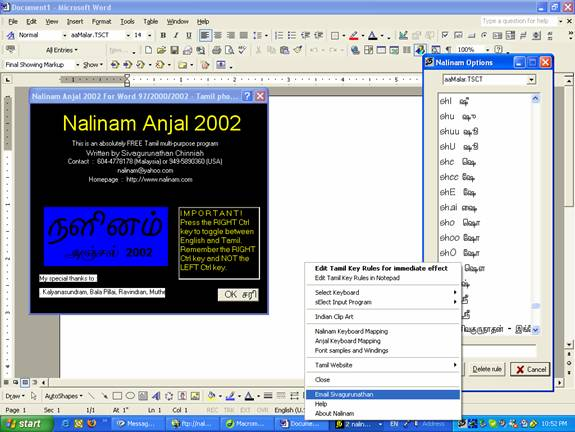

Free Downloads
Nalinam 2012 - world's fastest Tamil Keyboarding System, type 51% of tamil words with 8 fingers. Similar to English DVORAK keyboard

Nalinam - Easy Anjal Tamil keyboarding system for English speakers

Nalinam Anjal 2002 Tamil Input for XP/NT/ME/2000/98/95
Nalinam 9 - Standalone Tamil word processing application for Windows 2000/XP

Nalinam for DOS ver 4.21

NaliFont Font and Border Creator for DOS ver 4.21

Lingo in Tamil Educational Game for DOS